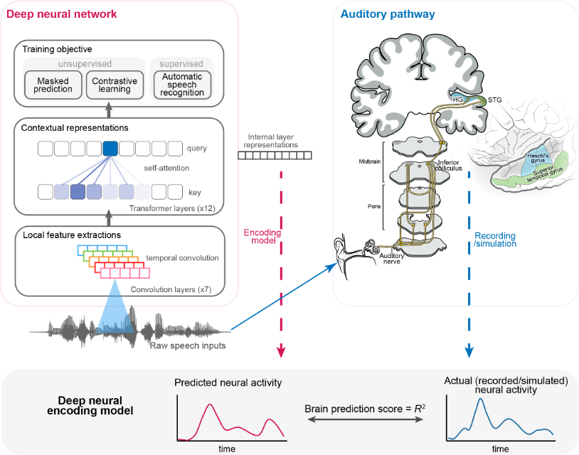
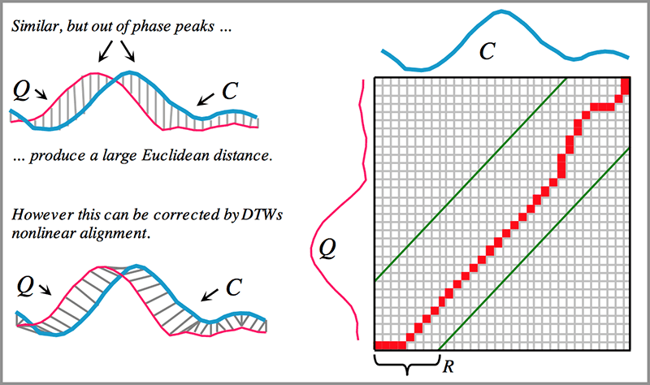

📌 Research Themes: Do deep learning to have similar speech processing mechanisms as the human brain?
人脑听觉通路的自然语音神经响应活动具有层级结构，这意味着不同的神经结构对语音信号的处理和表征随着层级的增加而变得更加复杂和抽象。基于语言学和音韵学的假设或理论，神经科学家们在不同层次上提取特征，分析通路中各个环节的编码信息。图一展示了人脑听觉通路的几个重要处理区域以及它们的功能。
在人工智能领域，基于大规模自然语音训练的语音识别模型在很多自动语音识别（ASR）任务上已经达到接近人类的识别水平。这类由数据驱动的模型，其内部复杂的动态表征引起了神经科学家们的注意。这些人工智能模型与大脑听觉回路能够接收相同的语音输入，并执行相似的认知功能，那么这两者之间是否存在计算和表征上的相似性呢？
📌 A novel research methodology: Align deep learning representation with auditory neural activity.
从语音预训练的深度神经网络中提取特征表达，运用这些数据驱动的特征构建新的线性编码模型，并与真实的大脑听觉响应信号进行相关性分析，从而研究深度神经网络内在特征表征与大脑听觉通路内不同神经群体活动之间的相似性。

(图二)Image from: Li, Yuan Ning. https://mp.weixin.qq.com/s/DYE4jURC3m8-D_apz3aiPg
为了深入地了解这种研究方式，本页面实现了两个基于这种方法论的研究课题。第一个利用行为数据对自动化语音模型进行定量的比较，第二个利用脑电记录对齐了深度神经网络的层级表示和听觉系统的神经活动。在本地实现过程中，你需要下载一些数据集和代码仓库，一个GPU也可能是需要的。在原论文的基础上，我还增加了一些最新的工作，比如Whisper模型。
主要基于以下两个出版物，它们拥有着很友好的数据和代码获取方式。
Juliette Millet and Ewan Dunbar. Do self-supervised speech models develop human-like perception biases? AAAI 2022 Workshop, Self-Supervised Learning for Audio and Speech Processing, 2022.
Li, Y., Anumanchipalli, G., Mohamed, A., Chen, P., Carney, L. H., Lu, J., Wu, J., Chang, E.F. (2023) Dissecting neural computations of the human auditory pathway using deep neural networks for speech. Nature Neuroscience, 26, 1-30.
Part One: Do self-supervised speech models develop human-like perception biases?¶
背景¶
人类听众在母语的影响下发展出了对语音的感知偏见。例如，
- 日语母语者倾向于混淆英语中的/r/和/l/音（Yamada和Tohkura，1990）（英语中的right和light会被感知为相同或非常相似），
- 英语母语者则难以区分法语中/y/-/u/的对比（Levy，2009），很难感知rue（/y/：街道）和roue（/u/：车轮）之间的区别。
这些错误感知在母语习得过程中很早就开始显现：6个月以上的婴儿在辨别母语的声音上会展现出促进效应，但在某些非母语的声音上会出现下降（Kuhl等，2006）。由于这种对母语声音的改进和对非母语声音的下降似乎对婴儿未来的语言能力有积极的影响（Tsao等，2004；Kuhl等，2005），拥有一个带有母语偏见的感知空间可能对于在各种情况下（包括环境噪声、说话者变化等）正确地感知和理解母语讲话至关重要。
自我监督模型是目前最为先进的语音处理模型，其从大量的无标记数据中构建了表示空间，并在语音识别等任务上展示出接近人类水平的能力。自我监督预训练的得到表示空间拥有像人类类似的弹性和适应性——在英语数据微调上的模型在英语上能够进一步提升性能，但是会降低对其他潜在语音的分辨能力。尽管很容易从数据分布的角度对这个观察进行解释，不过我们更加关心这个观察和人类发展出的感知偏好之间的关系。
探索自监督模型是否具有与人类相似的母语偏见是非常有趣的。
要解决的问题是：训练使用的语言数据是否像人类听众的母语一样影响自监督语音模型。
方法¶
我将其实验方法抽象为下面的过程，具体的细节将会随着进度逐渐地清晰起来。
- 人类感知语音测试，得到参与者的行为数据。
- 自监督模型感知语音测试，模拟人类对音素的区分行为。
- 比较这两种表现。
准备¶
人类感知语音¶
人类语音知觉的探测使用ABX音素辨别测试，参与者会听到三段语音片段：A、B和X（一个A/B/X三元组）。A和B之间始终只有一个音素不同，而X始终与A或B中的一个具有相同的音素序列（例如，A：/pap/，B：/pip/，X：/pap/）。参与者被要求指出前两个声音（A或B）中哪个与最后一个声音（X）最相似。p1:p2称为一个对比。
刺激数据来自Perceptimatic Dataset, 它是一个包含了五个子数据集的语音感知数据。Perceptimatic包含了六种不同语言的音位辨别任务上的行为数据，共计662个音位对比，以及实验中使用的声音刺激。我们通过下面的代码来了解它的样子。在本文中，以法语和英语为母语的单语参与者的结果被考虑。
import tqdm
import os
import torch
import numpy as np
#
filename_triplet_list = "triplet_data.csv" # opensource
dataset_path = "dataset"
get_func = None
distance = None
def read_csv(filename):
lines = open(filename, 'r').readlines()
ind = lines[0].strip().split(',')
data = []
for line in lines[1:]:
data.append({name:value for name, value in zip(ind, line.strip().split(',')) })
return data
lines = read_csv(filename_triplet_list)
print(f"Number of Triplet Data:{len(lines)}")
print("Triplet Data Sample:")
for name, value in lines[0].items():
print(f"\t{name}:\t\t{value}")
Number of Triplet Data:8461 Triplet Data Sample: : 0 triplet_id: triplet_83_B TGT_item: amelia_consonants_10.wav OTH_item: amelia_consonants_28.wav X_item: ewan_58.wav speaker_TGT: amelia speaker_OTH: amelia speaker_X: ewan language_TGT: EN language_OTH: EN language_X: EN TGT_first: False dataset: pilot-aug-2018
可以看到数据包含了8461个Triplet Data。
根据论文显示，数据集包含4231个不同的三元组。这是8461的一半，因为每个三元组有时以目标/其他/X的顺序呈现给参与者，有时以其他/目标/X的顺序呈现。
TGT_item 表明了目标音素序列的音频文件A，OTH_item表明了用于混淆的音频文件B，X_item则是具有与文件A相同的音素序列。此外，该数据还包括了了说话人和语种信息。让我们听听它们，试着体验一下。
from IPython.display import Audio, display
sample_data = lines[0]
TGT_func = lambda x : os.path.join(dataset_path, x["dataset"], "wavs_extracted", x["TGT_item"])
OTH_func = lambda x : os.path.join(dataset_path, x["dataset"], "wavs_extracted", x["OTH_item"])
X_func = lambda x : os.path.join(dataset_path, x["dataset"], "wavs_extracted", x["X_item"])
TGT_audio_sample = TGT_func(sample_data)
OTH_audio_sample = OTH_func(sample_data)
X_audio_sample = X_func(sample_data)
print("Sample A:")
display(Audio(filename=TGT_audio_sample,rate=16000))
print("Sample B:")
display(Audio(filename=OTH_audio_sample,rate=16000))
print("Sample X:")
display(Audio(filename=X_audio_sample,rate=16000))
Sample A:
Sample B:
Sample X:
听起来A和X是一样的，/atɑ/。中间的那个听起来像是/afɑ/。 现在让我们看看这些刺激对应的实验结果。
human_and_models_filename = "humans_and_models/file_data.csv" # opensource
human_and_models_data = read_csv(human_and_models_filename)
print(f"Number of Human Behavioural Experiments:{len(human_and_models_data)}")
for i in human_and_models_data:
if 'triplet_83_B' == i["triplet_id"]:
print("Data Sample (triplet_83_B):")
for name, value in i.items():
print(f"\t{name}:\t\t\t\t{value}")
break
Number of Human Behavioural Experiments:87631 Data Sample (triplet_83_B): : 0 subject_id: X_IHTYDKWOUB subject_language: EN triplet_id: triplet_83_B TGT_item: amelia_consonants_10.wav OTH_item: amelia_consonants_28.wav X_item: ewan_58.wav speaker_TGT: amelia speaker_OTH: amelia speaker_X: ewan language_TGT: EN language_OTH: EN language_X: EN TGT_first: False user_ans: 1 bin_user_ans: 1 phone_TGT: t phone_OTH: f phone_X: t prev_phone: a next_phone: ɑ context: a_ɑ nb_stimuli: 0 dataset: pilot-aug-2018 deepspeech_englishtxt_rnn4: 0.15936934043274648 wav2vec_english_transf4: 0.12251163941376364 deepspeech_frenchtxt_rnn4: 0.1629706981896903 cpc_french_AR: 0.05872012213169375 wav2vec_french_transf4: 0.04093575305274538 hubert_french_transf_5: 0.04855605986577621 cpc_audioset_AR: -0.020788736911799943 mfccs_la: -0.0025078723330559174 cpc_english_AR: 0.050190139536198775 hubert_english_transf_5: 0.08956584890180974 wav2vec_audioset_transf4: 0.0319468904371876 hubert_audioset_transf_5: 0.04221348163325256 deepspeech_french_rnn4: 0.18394535542149 deepspeech_english_rnn4: 0.18102908468174178
这些刺激产生了87631条行为数据。我们还查看了刚才那个Triplet Data的第一个行为实验结果。比起刚才，我们得到了更多的信息：
- prev_phone 和 next_phone 确定了我们刚才所听到的内容。
- prev_phone 和 next_phone组成了context。
- user_ans 为1，说明听者选择了第一个。
此外，这个测试包括了662个音素对比，259名法语参与者和280名英语参与者。注意到上面还展示了很多很长的浮点数，不过现在你可以不用关注它。
自监督模型感知语音¶
现在我们开始让自监督模型去感知这些刺激。这里展示了一个很方便的方法来使用这些强大的语音模型，以wav2vec2为例子。可以看到，模型的导入只花费了两行代码。这个模型是在16kHz采样语音音频上对960小时的Librispeech进行了预训练和微调，因此可以认为，这个模型代表着英语母语者。
from transformers import Wav2Vec2Processor, Wav2Vec2ForCTC
import soundfile as sf
# load model and tokenizer
processor = Wav2Vec2Processor.from_pretrained("facebook/wav2vec2-base-960h")
model = Wav2Vec2ForCTC.from_pretrained("facebook/wav2vec2-base-960h").eval()
# read target audio with soundfiles
TGT_audio_data, sr = sf.read(TGT_audio_sample)
# tokenize
input_values = processor(TGT_audio_data, return_tensors="pt", padding="longest").input_values # Batch size 1
# retrieve model output including logits and hidden representation
output = model(input_values, output_hidden_states=True)
Ignored unknown kwarg option normalize Ignored unknown kwarg option normalize Ignored unknown kwarg option normalize Ignored unknown kwarg option normalize
Some weights of Wav2Vec2ForCTC were not initialized from the model checkpoint at facebook/wav2vec2-base-960h and are newly initialized: ['wav2vec2.masked_spec_embed'] You should probably TRAIN this model on a down-stream task to be able to use it for predictions and inference. It is strongly recommended to pass the ``sampling_rate`` argument to this function. Failing to do so can result in silent errors that might be hard to debug.
模型感知了TGT_audio_sample，这也是我们刚才听到的那个/ata/。让我们看看wav2vec2把它听成了什么？
logits = output.logits
# take argmax and decode
predicted_ids = torch.argmax(logits, dim=-1)
transcription = processor.batch_decode(predicted_ids)
print(f"transcription:{transcription}")
transcription:['AHTA']
/AHTA/ 这看起来很不错，很接近我们听到的内容。一般来说，在研究深度神经网络的表示空间时，我们会使用模型中内部的某个特定的layer进行探查。wav2vec2是一个仅拥有encoder的模型，它所拥有的layer可以通过下面的命令查看：
print(model.wav2vec2.encoder.layers)
# hidden state
print(f"# of Layers:{len(output.hidden_states)}")
print(f"Shape of each Layer:{output.hidden_states[0].shape}")
ModuleList(
(0-11): 12 x Wav2Vec2EncoderLayer(
(attention): Wav2Vec2Attention(
(k_proj): Linear(in_features=768, out_features=768, bias=True)
(v_proj): Linear(in_features=768, out_features=768, bias=True)
(q_proj): Linear(in_features=768, out_features=768, bias=True)
(out_proj): Linear(in_features=768, out_features=768, bias=True)
)
(dropout): Dropout(p=0.1, inplace=False)
(layer_norm): LayerNorm((768,), eps=1e-05, elementwise_affine=True)
(feed_forward): Wav2Vec2FeedForward(
(intermediate_dropout): Dropout(p=0.1, inplace=False)
(intermediate_dense): Linear(in_features=768, out_features=3072, bias=True)
(intermediate_act_fn): GELUActivation()
(output_dense): Linear(in_features=3072, out_features=768, bias=True)
(output_dropout): Dropout(p=0.1, inplace=False)
)
(final_layer_norm): LayerNorm((768,), eps=1e-05, elementwise_affine=True)
)
)
# of Layers:13
Shape of each Layer:torch.Size([1, 31, 768])
wav2vec2拥有堆叠的12层Wav2Vec2EncoderLayer，不过在这里第五层的输出被选择用于研究。
对于TGT_audio_sample，自监督模型wav2vec2得到了拥有31个时间长度，每个时间点768维的表示特征。为了快速的得到更多的感知结果，我们将这些操作打包成一个函数。与此同时，常见的MFCC特征相关的函数也被展示在下面。
def get_wav2vec_representation(audio_sample, layer=-1):
audio_data, sr = sf.read(audio_sample)
input_values = processor(audio_data, sampling_rate=16000, return_tensors="pt", padding="longest").input_values # Batch size 1
output = model(input_values, output_hidden_states=True)
return output.hidden_states[layer].squeeze().detach()
import librosa
def get_mfcc_representation(filename,layer=-1):
y, sr = librosa.load(filename)
spect = librosa.feature.mfcc(
y=y,
sr=16000,
n_mfcc=13,
win_length=int(0.025 * sr),
hop_length=int(0.010 * sr),
)
spect = spect.T
return spect
TGT = get_wav2vec_representation(TGT_audio_sample, layer=6)
OTH = get_wav2vec_representation(OTH_audio_sample, layer=6)
X = get_wav2vec_representation(X_audio_sample, layer=6)
TGT.shape, OTH.shape, X.shape
(torch.Size([31, 768]), torch.Size([34, 768]), torch.Size([25, 768]))
回想人类感知语音时的实验方式：
给定一个A/B/X三元组。参与者被要求指出前A或B中哪个与X最相似。
这对于人类来说很简单，但是机器没法直接的告诉我们哪个和X相似。给定一个ABX三元组，我们现在拥有三个表示：
- A:[31, 768]
- B:[34, 768]
- C:[25, 768]
基于这三个表示的一个客观的度量需要被设计出来。它能够反映“哪个和X相似”这个性质。显然，直接进行形如“平方误差”的指标是不可行的，因为它们还拥有不同的时间刻度。一个可以解决这个问题的方法是动态时间规整（DTW，dynamic time warping）。

Image from: Rakthanmanon et al. “Searching and Mining Trillions of Time Series Subsequences under Dynamic Time Warping”, Figure 3.
为了直观，我们将ABC认为是一维的特征。那么我们可以把表示A认为是Q，也就是红色那个波形。表示C是C，蓝色的那根线。因为AC的内容是一样的，都是/ata/，它们是非常相似的。但是它们可能因为时间上的偏移，导致了的数据点的数量不一致（31 v.s. 25）。即便它们数据点数量一样，我们也会和左上方的展示的一样，得到很大的距离。也就是说它们“差别很大”。
DTW能够很好的对齐它们，就如左下角显示的那样，找到互相对应的时间点。此时得到的它们之间的距离，是一个很好的衡量它们之间差异的指标。右图展示了时间上的对应情况。那么，很容易想到：
$$ \Delta = \mathrm{DTW}(M_{other}, M_X) - \mathrm{DTW}(M_{target}, M_X)$$
其中DTW是使用动态时间规整来聚合沿着规整路径的帧级余弦距离得到的距离。 $\Delta$值越大（越正），模型在区分目标和其他音素类别方面的能力就越好。
from dtw_experiment import compute_dtw
TGT = get_wav2vec_representation(TGT_audio_sample, layer=6)
OTH = get_wav2vec_representation(OTH_audio_sample, layer=6)
X = get_wav2vec_representation(X_audio_sample, layer=6)
distance = "cosine"
TGTX = compute_dtw(TGT, X, distance, norm_div=True)
OTHX = compute_dtw(OTH, X, distance, norm_div=True)
wav2vec_delta = OTHX - TGTX
wav2vec_delta
0.07953015139713976
通过上面的公式，我们得到了自监督模型感知语音的结果。wav2vec2在$\Delta$的水平上，认为A和X相似。还记得我们在刺激对应的实验结果看到的很多数字吗？没错，那些就是语音模型的结果。
hubert_english_transf_5: 0.08956584890180974
cpc_french_AR: 0.05872012213169375
从这个case看起来，wav2vec2的分辨水平在这两个模型之间（这是一个不严谨的说法）。
from dtw_experiment import compute_dtw
TGT = get_mfcc_representation(TGT_audio_sample)
OTH = get_mfcc_representation(OTH_audio_sample)
X = get_mfcc_representation(X_audio_sample)
distance = "cosine"
TGTX = compute_dtw(TGT, X, distance, norm_div=True)
OTHX = compute_dtw(OTH, X, distance, norm_div=True)
mfcc_delta = OTHX - TGTX
mfcc_delta
-0.0028166435984554386
顺便计算一下MFCC的表现，这个数值和公开的结果几乎一致。这说明了这些代码的可靠性。
更多地，几乎是目前最强的语音识别模型Whisper也被考虑了进来。
from transformers import WhisperProcessor, WhisperForConditionalGeneration
import soundfile as sf
processor = WhisperProcessor.from_pretrained("openai/whisper-large-v2")
model = WhisperForConditionalGeneration.from_pretrained("openai/whisper-large-v2")
model.config.forced_decoder_ids = None
sample = TGT_audio_sample
audio_data, sr = sf.read(sample)
input_features = processor(audio_data, sampling_rate=16000, return_tensors="pt").input_features
# generate token ids
predicted_ids = model.generate(inputs=input_features, output_hidden_states=True)
# decode token ids to text
transcription = processor.batch_decode(predicted_ids, skip_special_tokens=False)
['<|startoftranscript|><|en|><|transcribe|><|notimestamps|> .<|endoftext|>']
transcription = processor.batch_decode(predicted_ids, skip_special_tokens=True)
transcription
[' ATA']
def get_whiser_representation(audio_sample, layer=-1):
audio_data, sr = sf.read(audio_sample)
input_features_nopad = processor(audio_data, sampling_rate=16000, padding="do_not_pad", return_tensors="pt").input_features
input_features = processor(audio_data, sampling_rate=16000, return_tensors="pt").input_features
decoder_input_ids = torch.tensor([[1, 1]]) * model.config.decoder_start_token_id
output = model(input_features, output_hidden_states=True, decoder_input_ids=decoder_input_ids)
return output.encoder_last_hidden_state[:,:input_features_nopad[0].shape[1],:].squeeze().detach()
from dtw_experiment import compute_dtw
TGT = get_whiser_representation(TGT_audio_sample)
OTH = get_whiser_representation(OTH_audio_sample)
X = get_whiser_representation(X_audio_sample)
distance = "cosine"
TGTX = compute_dtw(TGT, X, distance, norm_div=True)
OTHX = compute_dtw(OTH, X, distance, norm_div=True)
whisper_delta = OTHX - TGTX
whisper_delta
-0.018564086530874824
这个数值看起来并不是那么优秀。由于完整的计算需要超过24小时的计算量，我暂时将这部分工作放在了一边。探索Whisper的语音感知处理机制将会非常有趣，因为它并不属于自监督模型。优越的性能预示着它可能发展出了独特的处理方式，也可能它自己启发性的觉醒了类似自监督的感知模式。
让我们回到更早的部分。现在我们知道如何让语音模型感知每个语音刺激了，计算整个数据集上的结果只是一个循环的事情。
from dtw_experiment import compute_dtw
def get_delta(
TGT_audio_sample,
OTH_audio_sample,
X_audio_sample,
func):
TGT = func(TGT_audio_sample)
OTH = func(OTH_audio_sample)
X = func(X_audio_sample)
distance = "cosine"
TGTX = compute_dtw(TGT, X, distance, norm_div=True)
OTHX = compute_dtw(OTH, X, distance, norm_div=True)
delta = OTHX - TGTX
return delta
triplets_data = read_csv(filename_triplet_list)
triplets_result = {}
func = get_mfcc_representation
for triplet_item in tqdm.tqdm(triplets_data, desc="Computing delta values...."):
TGT_audio_sample = TGT_func(triplet_item)
OTH_audio_sample = OTH_func(triplet_item)
X_audio_sample = X_func(triplet_item)
triplets_result[triplet_item["triplet_id"]] = get_delta(TGT_audio_sample,OTH_audio_sample,X_audio_sample,func)
Computing delta values....: 2%|███▊ | 138/8461 [00:10<12:19, 11.26it/s]/tmp/ipykernel_29973/3164014193.py:9: UserWarning: PySoundFile failed. Trying audioread instead. y, sr = librosa.load(filename) /ssd9/exec/penglinkai/miniconda3/envs/pytorch/lib/python3.8/site-packages/librosa/core/audio.py:183: FutureWarning: librosa.core.audio.__audioread_load Deprecated as of librosa version 0.10.0. It will be removed in librosa version 1.0. y, sr_native = __audioread_load(path, offset, duration, dtype) Computing delta values....: 2%|███▉ | 140/8461 [00:11<10:57, 12.65it/s]
for item in human_and_models_data:
#item[model_name] = triplets_result[item["triplet_id"]]
for k in item:
if k in ["TGT_first", "subject_id", "dataset"]: continue
try:
item[k] = float(item[k])
except:
pass
比较人类和自监督模型在语音感知上的区别¶
两种指标用于评估自监督模型的表示空间与人类对语音的感知空间相匹配的程度 （See Paper Sec. 5.2）。
the log-likelihood
the Spearman correlation (ρ)
The log-likelihood¶
对于自监督模型，我们计算了$\Delta$值。如果$\Delta$值能够很好地预测人类行为实验的选择结果，说明了自监督模型能够很好地预测人类的表现，模型的表示空间与实验参与者的感知空间越相似。
因为参与者的回答是离散的（正确或错误），因此需要使用probit回归来拟合参与者的二元响应。
1.解释：为什么不是我们常用的线性回归？ 我们尝试直接使用线性回归进行处理。设因变量为听者答案的正确和错误，有
$$ \begin{equation} y = \left\{ \begin{array}{**lr**} 1 & \mathrm{Correct} \\ 0 & \mathrm{Incorrect} \end{array} \right. \end{equation} $$
影响$y$的因素记为$x=(x_1,x_2,...,x_n)$ （为了简化，这里不会标记单个样本）,得到多元回归（Linear Probability Model）的式子
$$ \begin{equation} y = \beta_0 + \beta_1 x_1 + \beta_2 x_2 + ... + + \beta_n x_n + \epsilon \end{equation} $$
其中$(\beta_1,\beta_2,...,\beta_n)^T=\boldsymbol \beta$表示参数，$\epsilon$为误差项，使用向量形式有
$$ \begin{equation} y = \beta_0 + \boldsymbol \beta \mathbf x + \epsilon \end{equation} $$
根据随机误差项的零均值假设:$\mathbb{E}(\epsilon|\mathbf x)=0$，有
$$ \begin{equation} \mathbb{E}(y|\mathbf x) = \beta_0 + \beta_1 x_1 + \beta_2 x_2 + ... + \beta_n x_n \end{equation} $$
记$\hat(y)_i$为预测值，对应的损失函数为
$$ \begin{equation} Q = \sum^n_1(y_i - \hat{y}_i)^2 = \sum^n_1(y_i - (\beta_0 + \beta_1 x_1 + \beta_2 x_2 + ... + \beta_n x_n))^2 \end{equation} $$
估计出使得损失函数最小化的一组参数，将它们记为$(\hat{\beta_0},\hat{\beta_1},\hat{\beta_2},...,\hat{\beta_n})$
因为$y$的值只有0或者1，记$y=1$时对应的概率值为$p$，那么$y=0$时对应的概率值为$1-p$，那么有
$$ \begin{align} \mathbb{E}(y) & = 0 \times (1-p) + 1 \times p \\ & = p \\ & = P(y=1|\mathbf x) \\ & = \hat{y} \\ & = \hat{\beta_0} + \hat{\beta_1} x_1 + \hat{\beta_2} x_2 + ... + + \hat{\beta_n} x_n \end{align} $$
看起来，在保持其他因素不变的情况下，$\beta_i$表示因为$x_i$的变化导致参与者的回答正确概率$P(y=1)$的影响：
$$ \begin{equation} \Delta P(y=1|\mathbf x) = \beta_i \Delta x_i \end{equation} $$
也就是说在这个模型中，$\beta_i$ 的含义是当$x_i$增加一个单位时，$y$的期望值增加$\beta_i$个单位，而不考虑其他变量的影响。这个效应是恒定的，不随着$x$的变化而变化。
但是，这个假设是不符合实际的，因为$y$是一个离散变量，它的取值范围是$[0,1]$，而不是实数域。如果$x$的取值很大或很小，那么线性概率模型可能会预测出$y$的值超出$[0,1]$的范围，这是没有意义的。这也就意味着直接的使用普通的线性回归模型对二元因变量进行建模是有问题的（实际上还包括其他的问题）。
2.解释：二元Probit回归是什么？
既然LPM无法保证预测值$y$在$[0,1]$之间，那么可以通过一个变换函数$\Phi$，将它们映射过去。一个经典的选择是标准正态分布
$$P(y=1|\mathbf x) = \Phi (\mathbf x \beta) = \int_{-\inf}^{\mathbf x \beta} \frac{1}{\sqrt{2\pi}} \mathrm{exp}(-\frac{z^2}{2})dz\tag {1}$$
这就是Probit模型。为了估计参数 $\beta$ ，我们可以利用最大似然函数的方法，构造如下的似然函数：
$$ L (\beta)=\prod_ {i=1}^ {n}P (y_i=1|\mathrm x_ {i})^ {y_i} [1-P (y_i=1|\mathrm x_ {i})]^ {1-y_i}\tag {2}$$
将公式（1）代入公式（2），得到：
$$L (\beta)=\prod_ {i=1}^ {n}[\Phi (\mathrm x_ {i}\beta)]^ {y_i} [1-\Phi (\mathrm x_ {i}\beta)]^ {1-y_i}\tag {3}$$
为了方便计算，我们可以对似然函数取对数，得到对数似然函数：
$$ \ln L (\beta)=\sum_ {i=1}^ {n}[y_i\ln \Phi (\mathrm x_ {i} \beta)+(1-y_i)\ln (1-\Phi (\mathrm x_ {i}\beta))]\tag {4}$$
我们的目标是找到使得对数似然函数最大的$ \beta $值，也就是最大似然估计。由于对数似然函数没有解析解，我们只能通过数值方法来求解，比如牛顿法或拟牛顿法等。
在得到参数之后，样本集合上的Log-Likelihood就代表了模型预测实验数据的能力，也就是说，模型参数越能够解释数据的变化，Log-Likelihood就越大。
使用基于模型表示计算的$\Delta$值作为预测变量。除了全局截距外，回归还利用了其他预测变量来解释：
- 正确答案是否为A（1）或B（0）；
- 试验在实验列表中的顺序；
- 一个用于参与者的分类预测变量；
- 一个用于结果所属的Perceptimatic子集。
在使用过程中，需要将部分变量映射到$[0,1]$的范围和标准化。the log-likelihood是从拟合的回归模型中获得的：the log-likelihood越大（负值越小），给定模型的$\Delta$值越好地预测实验数据；也就说：模型能够更好地预测人类的表现。因此，模型的表示空间与实验参与者的感知空间越相似。此外，它可以用来比较不同的模型，看哪个模型更能够拟合数据。
from multiprocessing import Pool
import pandas as pd
from statsmodels.formula.api import probit
from sampling import get_dico_corres_file, sample_lines
model_name = "wav2vec_audioset_transf4"
dico_lines = get_dico_corres_file(human_and_models_filename, french=False, english = True)
lines_sampled = sample_lines(dico_lines)
data_ = pd.DataFrame(human_and_models_data)
data_['bin_user_ans'] = (data_['bin_user_ans'] + 1.) / 2 # we transform -1 1 into 0 1
data_['TGT_first'] = data_['TGT_first'].astype(bool)
data_['TGT_first_code'] = data_['TGT_first'].astype(int)
data = data_.iloc[lines_sampled]
data_worker = data.copy()
# normalize data
for val in ['nb_stimuli', model_name]:
data_worker[val] = (data[val] -data[val].mean())/data[val].std()
python的statsmodels库提供了方便的probit api。代码使用了"wav2vec_audioset_transf4"的$\Delta$值和上面提到的三个特征作为预测变量。
# we create the probit model
model_probit = probit("bin_user_ans ~ C(subject_id) + C(dataset) + nb_stimuli + " + model_name, data_worker)
result_probit = model_probit.fit_regularized(max_iter=200, disp=True)
loglikehood = model_probit.loglike(result_probit.params)
Optimization terminated successfully (Exit mode 0)
Current function value: 0.5111167023684066
Iterations: 625
Function evaluations: 625
Gradient evaluations: 625
result_probit.summary()
| Dep. Variable: | bin_user_ans | No. Observations: | 42305 |
|---|---|---|---|
| Model: | Probit | Df Residuals: | 42019 |
| Method: | MLE | Df Model: | 285 |
| Date: | Fri, 03 Nov 2023 | Pseudo R-squ.: | 0.06242 |
| Time: | 00:34:52 | Log-Likelihood: | -21623. |
| converged: | True | LL-Null: | -23062. |
| Covariance Type: | nonrobust | LLR p-value: | 0.000 |
在结果中我们可以看到Log-Likelihood的值是-21623。这个值似乎没有很直观的性能解释，不过我们可以看看其他模型的表现以及论文中所展示出来的结果。这里可以直接加载计算好了的结果。
# pre calculated result
result_filename = "results.csv"
with open(result_filename, "r") as f:
lines = f.readlines()
idxs = lines[0].strip().split(",")[1:]
result_data = []
for line in lines[1:]: result_data.append([float(_) for _ in line.strip().split(",")][1:])
mean = np.average(result_data, axis=0)
variance = np.var(result_data, axis=0)
x = np.arange(len(idxs))
rank_data = [[i,j] for i,j in zip(mean, idxs)]
rank_data = sorted(rank_data, key=lambda x : -x[0])
mean, idxs = [round(_[0]) for _ in rank_data], [_[1] for _ in rank_data]
from pyecharts.globals import CurrentConfig, NotebookType
CurrentConfig.NOTEBOOK_TYPE = NotebookType.JUPYTER_LAB
from pyecharts.charts import Bar
from pyecharts import options as opts
bar = (
Bar(init_opts=opts.InitOpts())
.add_xaxis(idxs)
.add_yaxis("Log-likelihood values (shorter bars are better)", mean)
.set_global_opts(title_opts=opts.TitleOpts(
title="Log-likelihood values", subtitle="For English participants"),
xaxis_opts=opts.AxisOpts(axislabel_opts=opts.LabelOpts(rotate=-90)),
yaxis_opts=opts.AxisOpts(min_=-21700, max_=-20000)
)
)
bar.load_javascript()
bar.render("bar_chart_1.html")
'/ssd9/exec/penglinkai/brain_sci/Sel_supervised_models_perception_biases/bar_chart_1.html'
from IPython.display import IFrame
IFrame(src='./bar_chart_1.html', width=1000, height=600)
可以看到对于英语参与者来说，使用英语数据进行训练的模型拥有着更好的匹配度。这个结果支持了“使用英语数据训练的自监督模型具有与人类相似的英语语言偏见。”
The Spearman correlation (ρ)¶
该部分计算了模型∆值的与参与者准确性的斯皮尔曼相关系数（Spearman's ρ），计算是在每个音位对比的水平上进行的。具体来说：
import pandas as pd
from scipy.stats import spearmanr
data = pd.read_csv(human_and_models_filename)
dico_lines_french = get_dico_corres_file(human_and_models_filename, french=True, english=False)
dico_lines_english = get_dico_corres_file(human_and_models_filename, french=False, english=True)
list_sampled_english = sample_lines(dico_lines_english)
dff = data.iloc[list_sampled_english]
value_evaluated = "wav2vec_audioset_transf4"
# We get only what we need
dff = dff[[
'triplet_id',
'phone_TGT',
'phone_OTH',
'prev_phone',
'next_phone',
'language_OTH',
'language_TGT',
'dataset',
'user_ans',
value_evaluated]]
# We adapt to some dataset that have a -3 / 3 scale
dff.loc[dff['dataset'] == "WorldVowels", ['user_ans']] = dff.loc[dff['dataset'] == "WorldVowels", ['user_ans']] / 3.
dff.loc[dff['dataset'] == "zerospeech", ['user_ans']] = dff.loc[dff['dataset'] == "zerospeech", ['user_ans']] / 3.
这部分代码选取了triplet_id,phone_TGT,phone_OTH,prev_phone,next_phone,language_OTH,language_TGT,dataset,user_ans作为分组的依据
# We average over triplet first
gf = dff.groupby([
'triplet_id',
'phone_TGT',
'phone_OTH',
'prev_phone',
'next_phone',
'language_OTH',
'language_TGT',
'dataset'], as_index = False)
ans_fr = gf.user_ans.mean()
val_fr = gf[value_evaluated].mean()
ans_fr[value_evaluated] = val_fr[value_evaluated]
len(list(gf)),list(gf)[0]
(8461,
(('BR_TRIP10222_0', 'e', 'ĩ', 's', 'k', 'BR', 'BR', 'WorldVowels'),
triplet_id phone_TGT phone_OTH prev_phone next_phone language_OTH \
30227 BR_TRIP10222_0 e ĩ s k BR
30227 BR_TRIP10222_0 e ĩ s k BR
34754 BR_TRIP10222_0 e ĩ s k BR
26129 BR_TRIP10222_0 e ĩ s k BR
26129 BR_TRIP10222_0 e ĩ s k BR
language_TGT dataset user_ans wav2vec_audioset_transf4
30227 BR WorldVowels 0.666667 0.031396
30227 BR WorldVowels 0.666667 0.031396
34754 BR WorldVowels 0.666667 0.031396
26129 BR WorldVowels -0.333333 0.031396
26129 BR WorldVowels -0.333333 0.031396 ))
其中len(list(gf))表示了分组结果的情况，有8461个不同组别。list(gf)[0]展示了属于第一组的几个实验结果。数据在user_ans，value_evaluated（wav2vec_audioset_transf4）上进行平均。下面展示了结果。
ans_fr
| triplet_id | phone_TGT | phone_OTH | prev_phone | next_phone | language_OTH | language_TGT | dataset | user_ans | wav2vec_audioset_transf4 | |
|---|---|---|---|---|---|---|---|---|---|---|
| 0 | BR_TRIP10222_0 | e | ĩ | s | k | BR | BR | WorldVowels | 2.666667e-01 | 0.031396 |
| 1 | BR_TRIP10222_1 | e | ĩ | s | k | BR | BR | WorldVowels | 6.666667e-02 | 0.031396 |
| 2 | BR_TRIP10726_0 | i | ɛ | d | s | BR | BR | WorldVowels | 8.666667e-01 | 0.054557 |
| 3 | BR_TRIP10726_1 | i | ɛ | d | s | BR | BR | WorldVowels | 9.333333e-01 | 0.054557 |
| 4 | BR_TRIP10775_0 | i | e | d | s | BR | BR | WorldVowels | 1.333333e-01 | 0.019795 |
| ... | ... | ... | ... | ... | ... | ... | ... | ... | ... | ... |
| 8456 | triplet_FR995 | y | l | t | e | FR | FR | zerospeech | 2.220446e-17 | 0.034653 |
| 8457 | triplet_FR996 | y | l | t | e | FR | FR | zerospeech | 6.666667e-01 | 0.034653 |
| 8458 | triplet_FR997 | y | l | p | d | FR | FR | zerospeech | -5.333333e-01 | -0.024223 |
| 8459 | triplet_FR998 | y | l | p | d | FR | FR | zerospeech | -1.333333e-01 | -0.024223 |
| 8460 | triplet_FR999 | y | l | s | i | FR | FR | zerospeech | 7.333333e-01 | 0.027158 |
8461 rows × 10 columns
在这一步上triplet_id被合并，使用'phone_TGT','phone_OTH','prev_phone','next_phone','language_OTH','language_TGT','dataset'作为分组依据。
# Then we average over context
gf = ans_fr.groupby([
'phone_TGT',
'phone_OTH',
'prev_phone',
'next_phone',
'language_OTH',
'language_TGT',
'dataset'], as_index = False)
ans_fr = gf.user_ans.mean()
val_fr = gf[value_evaluated].mean()
ans_fr[value_evaluated] = val_fr[value_evaluated]
len(list(gf)),list(gf)[0]
(3401,
(('a', 'aː', 'f', 'f', 'GL', 'GL', 'WorldVowels'),
triplet_id phone_TGT phone_OTH prev_phone next_phone language_OTH \
1998 GL_TRIP1548_0 a aː f f GL
1999 GL_TRIP1548_1 a aː f f GL
2026 GL_TRIP2165_0 a aː f f GL
2027 GL_TRIP2165_1 a aː f f GL
2114 GL_TRIP945_0 a aː f f GL
2115 GL_TRIP945_1 a aː f f GL
language_TGT dataset user_ans wav2vec_audioset_transf4
1998 GL WorldVowels 0.466667 -0.005935
1999 GL WorldVowels 0.800000 -0.005935
2026 GL WorldVowels 0.200000 0.062786
2027 GL WorldVowels 0.200000 0.062786
2114 GL WorldVowels -0.133333 0.020428
2115 GL WorldVowels 0.200000 0.020428 ))
其中len(list(gf))表示了分组结果的情况，有3401个不同组别。list(gf)[0]展示了属于第一组的几个实验结果。数据再次在user_ans，value_evaluated（wav2vec_audioset_transf4）上进行平均。下面展示了结果。
ans_fr
| phone_TGT | phone_OTH | prev_phone | next_phone | language_OTH | language_TGT | dataset | user_ans | wav2vec_audioset_transf4 | |
|---|---|---|---|---|---|---|---|---|---|
| 0 | a | aː | f | f | GL | GL | WorldVowels | 0.288889 | 0.025759 |
| 1 | a | aː | g | g | GL | GL | WorldVowels | 0.477778 | 0.044892 |
| 2 | a | aː | p | p | GL | GL | WorldVowels | 0.200000 | -0.005515 |
| 3 | a | e | d | k | FR | FR | zerospeech | -0.233333 | 0.011050 |
| 4 | a | e | i | d | FR | FR | zerospeech | 0.433333 | 0.054048 |
| ... | ... | ... | ... | ... | ... | ... | ... | ... | ... |
| 3396 | θ | s | a | ɑ | EN | EN | pilot-aug-2018 | 0.200000 | 0.009272 |
| 3397 | θ | s | i | i | EN | EN | pilot-aug-2018 | 0.600000 | 0.017195 |
| 3398 | θ | t | i | i | EN | EN | pilot-aug-2018 | 0.600000 | 0.055567 |
| 3399 | θ | ʃ | a | ɑ | EN | EN | pilot-aug-2018 | 0.600000 | 0.010789 |
| 3400 | θ | ʃ | i | i | EN | EN | pilot-aug-2018 | -0.200000 | 0.011312 |
3401 rows × 9 columns
将'prev_phone'和'next_phone'合并，实现对音位对比的关注
# then we average over phone contrast
gf = ans_fr.groupby([
'phone_TGT',
'phone_OTH',
'language_OTH',
'language_TGT',
'dataset'], as_index=False)
ans_fr = gf.user_ans.mean()
val_fr = gf[value_evaluated].mean()
ans_fr[value_evaluated] = val_fr[value_evaluated]
len(list(gf)),list(gf)[0]
(1285,
(('a', 'aː', 'GL', 'GL', 'WorldVowels'),
phone_TGT phone_OTH prev_phone next_phone language_OTH language_TGT \
0 a aː f f GL GL
1 a aː g g GL GL
2 a aː p p GL GL
dataset user_ans wav2vec_audioset_transf4
0 WorldVowels 0.277778 0.025759
1 WorldVowels 0.344444 0.044892
2 WorldVowels 0.066667 -0.005515 ))
ans_fr
| phone_TGT | phone_OTH | language_OTH | language_TGT | dataset | user_ans | wav2vec_audioset_transf4 | |
|---|---|---|---|---|---|---|---|
| 0 | a | aː | GL | GL | WorldVowels | 0.229630 | 0.021712 |
| 1 | a | e | FR | FR | zerospeech | 0.333333 | 0.036211 |
| 2 | a | i | EN_DR2 | EN_DR2 | pilot-july-2018 | -0.066667 | 0.033544 |
| 3 | a | i | EN_DR3 | EN_DR3 | pilot-july-2018 | 0.200000 | 0.073582 |
| 4 | a | i | EN_DR7 | EN_DR7 | pilot-july-2018 | 0.000000 | 0.090170 |
| ... | ... | ... | ... | ... | ... | ... | ... |
| 1280 | θ | k | EN | EN | pilot-aug-2018 | 0.200000 | 0.003462 |
| 1281 | θ | p | EN | EN | pilot-aug-2018 | 0.400000 | 0.023903 |
| 1282 | θ | s | EN | EN | pilot-aug-2018 | 0.400000 | 0.013234 |
| 1283 | θ | t | EN | EN | pilot-aug-2018 | 0.200000 | 0.055567 |
| 1284 | θ | ʃ | EN | EN | pilot-aug-2018 | 0.600000 | 0.011051 |
1285 rows × 7 columns
# the we average over order TGT-OTH or the other way around
res = ans_fr.copy()
res['phone_TGT'] = ans_fr['phone_OTH']
res['phone_OTH'] = ans_fr['phone_TGT']
res['language_OTH'] = ans_fr['language_TGT']
res['language_TGT'] = ans_fr['language_OTH']
total = pd.concat([ans_fr, res], axis=0)
gf = total.groupby(['phone_TGT', 'phone_OTH', 'language_OTH','language_TGT', 'dataset'], as_index=False)
ans_fr = gf.user_ans.mean()
val_fr = gf[value_evaluated].mean()
ans_fr[value_evaluated] = val_fr[value_evaluated]
ans_fr
| phone_TGT | phone_OTH | language_OTH | language_TGT | dataset | user_ans | wav2vec_audioset_transf4 | |
|---|---|---|---|---|---|---|---|
| 0 | a | aː | GL | GL | WorldVowels | 0.238889 | 0.003995 |
| 1 | a | e | FR | FR | zerospeech | 0.383333 | 0.009876 |
| 2 | a | i | EN_DR2 | EN_DR2 | pilot-july-2018 | 0.166667 | 0.053046 |
| 3 | a | i | EN_DR3 | EN_DR3 | pilot-july-2018 | 0.200000 | 0.073582 |
| 4 | a | i | EN_DR4 | EN_DR4 | pilot-july-2018 | 0.600000 | 0.068183 |
| ... | ... | ... | ... | ... | ... | ... | ... |
| 1319 | θ | k | EN | EN | pilot-aug-2018 | 0.200000 | 0.010990 |
| 1320 | θ | p | EN | EN | pilot-aug-2018 | 0.200000 | 0.018190 |
| 1321 | θ | s | EN | EN | pilot-aug-2018 | 0.400000 | 0.022778 |
| 1322 | θ | t | EN | EN | pilot-aug-2018 | 0.500000 | 0.038148 |
| 1323 | θ | ʃ | EN | EN | pilot-aug-2018 | 0.400000 | 0.038617 |
1324 rows × 7 columns
最后将TGT-OTH的顺序忽略，得到了1324个音位对比对的实验结果。在模型的$\Delta$值和参与者响应之间进行spearmanr系数的计算
rho_fr, p_fr = spearmanr(ans_fr['user_ans'], ans_fr[value_evaluated])
print(value_evaluated, rho_fr, p_fr)
wav2vec_audioset_transf4 0.22731491604548676 4.152716578300844e-41
"0.227"这似乎不是很显著的结果，让我们将其他模型的结果放到一起看看情况
# pre calculated result
result_filename = "beginning_outfile_english.csv"
with open(result_filename, "r") as f:
lines = f.readlines()
idxs = lines[0].strip().split(",")[1:]
result_data = []
for line in lines[1:]: result_data.append([float(_) for _ in line.strip().split(",")][1:])
mean = [round(_, 3) for _ in np.average(result_data, axis=0)]
variance = np.var(result_data, axis=0)
x = np.arange(len(idxs))
rank_data = [[i,j] for i,j in zip(mean, idxs)]
rank_data = sorted(rank_data, key=lambda x : -x[0])
mean, idxs = [_[0] for _ in rank_data], [_[1] for _ in rank_data]
from pyecharts.globals import CurrentConfig, NotebookType
CurrentConfig.NOTEBOOK_TYPE = NotebookType.JUPYTER_LAB
from pyecharts.charts import Bar
from pyecharts import options as opts
bar = (
Bar(init_opts=opts.InitOpts())
.add_xaxis(idxs)
.add_yaxis("the Spearman correlation (ρ)", mean)
.set_global_opts(title_opts=opts.TitleOpts(
title="the Spearman correlation (ρ)"),
xaxis_opts=opts.AxisOpts(axislabel_opts=opts.LabelOpts(rotate=-90)),
yaxis_opts=opts.AxisOpts(min_=0.3, max_=0.6)
)
)
bar.load_javascript()
bar.render("bar_chart_2.html")
'/ssd9/exec/penglinkai/brain_sci/Sel_supervised_models_perception_biases/bar_chart_2.html'
from IPython.display import IFrame
IFrame(src='./bar_chart_2.html', width=1000, height=600)
在这一部分，对于每个模型，我们计算其母语效应与人类听众的母语效应之间的皮尔逊相关系数。相关系数越接近1，给定模型捕捉到的音素级母语效应就越好。 在这里，自监督模型的表现比通用的MFCC特征差。这表明，在音素对比度水平上，自监督模型对人类语音感知的某个组成部分捕捉得不够好。
Native language effect¶
在上面的部分，我们进行了全局上的衡量，度量模型的表征空间与人类听众的知觉空间之间的吻合度。在这部分我们评估模型是否能够重现由人类参与者的所表现出来的母语偏好。 具体来说，我们会评估分别由法语和英语数据训练的模型，是否展示出与法语和英语母语者相同的辨别行为。其大致思路为：
- 每个模型的$\Delta$值将会被归一化，用于模型之间的对比。
- 对于每个音素对比对，计算总体准确率。
- 对于每个音素对比对，法语训练模型的平均$\Delta$值减去英语模型的平均$\Delta$值。英语参与者和法语参与者的准确率也进行了相同的操作。这个数值可以认为是在某个音素对比对上的母语效应。
- 对于每个模型，计算每个音素对比对的母语效应与人类听众的母语效应之间的皮尔逊相关系数。
相关系数越接近1，给定模型捕捉到的音素级母语效应就越好。
data = pd.read_csv(human_and_models_filename, sep=',', encoding='utf-8')
dico_lines_french = get_dico_corres_file(human_and_models_filename, french=True, english=False)
dico_lines_english = get_dico_corres_file(human_and_models_filename, french=False, english=True)
list_sampled_french = sample_lines(dico_lines_french)
list_sampled_english = sample_lines(dico_lines_english)
lines_sampled = list_sampled_french + list_sampled_english
data = data.iloc[lines_sampled]
data.loc[data['dataset'] == "WorldVowels", ['user_ans']] = data.loc[data['dataset'] == "WorldVowels", ['user_ans']] / 3.
data.loc[data['dataset'] == "zerospeech", ['user_ans']] = data.loc[data['dataset'] == "zerospeech", ['user_ans']] / 3.
data_fr = data[data['subject_language'] == 'FR'].copy()
data_en = data[data['subject_language'] == 'EN'].copy()
dico_models = {'wav2vec_transf4':{'english':'wav2vec_english_transf4', 'french':'wav2vec_french_transf4'},
'hubert':{'english':'hubert_english_transf_5', 'french':'hubert_french_transf_5'},
'deepspeech_phon':{'english':'deepspeech_english_rnn4', 'french':'deepspeech_french_rnn4'},
'cpc':{'english':'cpc_english_AR', 'french':'cpc_french_AR'},
'deepspeech_txt': {'english': 'deepspeech_englishtxt_rnn4', 'french': 'deepspeech_frenchtxt_rnn4'},
}
values_comparison_english = [dico_models[modi]['english'] for modi in dico_models]
values_comparison_french = [dico_models[modi]['french'] for modi in dico_models]
# We normalize english and french side for the model so they are comparable
for i in range(len(values_comparison_english)):
data_fr[values_comparison_french[i]] = data_fr[values_comparison_french[i]] / data_fr[
values_comparison_french[i]].std()
data_en[values_comparison_english[i]] = data_en[values_comparison_english[i]] / data_en[
values_comparison_english[i]].std()
# Select data interested, same as above cells
data_en['contrast'] = data_en['phone_TGT'] + ';' + data_en['phone_OTH'] + ';' + data_en['language_OTH'] + ';' + data_en['language_TGT'] + ';' + data_en[ 'dataset']
data_fr['contrast'] = data_fr['phone_TGT'] + ';' + data_fr['phone_OTH'] + ';' + data_fr['language_OTH'] + ';' + data_fr['language_TGT'] + ';' + data_fr[ 'dataset']
# construct contrast data
data_fr_contrast = {}
data_en_contrast = {}
# assign a empty dict for later uses
for k in values_comparison_french + ['user_ans']:
data_fr_contrast[k] = {}
for k in values_comparison_english + ['user_ans']:
data_en_contrast[k] = {}
# loop each item, aggregate each contrast for each model
for idx in range(len(data_en)):
item = data_en.iloc[idx]
contrast = item['contrast'].replace('"', "")
for k in values_comparison_english + ['user_ans']:
delta = float(item[k])
data_en_contrast[k][contrast] = data_en_contrast[k].get(contrast, []) + [delta] # same as append()
for idx in range(len(data_fr)):
item = data_fr.iloc[idx]
contrast = item['contrast'].replace('"', "")
for k in values_comparison_french + ['user_ans']:
delta = float(item[k])
data_fr_contrast[k][contrast] = data_fr_contrast[k].get(contrast, []) + [delta] # same as append()
# sample
# {'wav2vec_english_transf4': {
# 'i;ʊ;EN_DR7;EN_DR7;pilot-july-2018': [0.7581879995638313,0.7581879995638313,0.7581879995638313],
# 'ʊ;ʌ;EN_DR7;EN_DR7;pilot-july-2018': [0.44245396646602203,0.32058457305888916,0.32058457305888916],
# 'a;u;EN_DR2;EN_DR2;pilot-july-2018': [0.3934868173149888,0.3934868173149888,0.3934868173149888],
# 'æ;ʊ;EN_DR5;EN_DR5;pilot-july-2018': [0.7740108224569093,0.7740108224569093,0.7740108224569093],
# ...
# we average the results
for k in values_comparison_english + ['user_ans']:
for cont in data_en_contrast[k]:
data_en_contrast[k][cont] = np.asarray(data_en_contrast[k][cont]).mean()
for k in values_comparison_french + ['user_ans']:
for cont in data_fr_contrast[k]:
data_fr_contrast[k][cont] = np.asarray(data_fr_contrast[k][cont]).mean()
# sample
# {'wav2vec_english_transf4': {
# 'i;ʊ;EN_DR7;EN_DR7;pilot-july-2018': 1.3776102894272364,
# 'ʊ;ʌ;EN_DR7;EN_DR7;pilot-july-2018': 0.44245396646602203,
# 'a;u;EN_DR2;EN_DR2;pilot-july-2018': 2.9639408282294744,
# 'æ;ʊ;EN_DR5;EN_DR5;pilot-july-2018': 0.7740108224569093,
在这里音素对比对的平均$\Delta$被计算完毕，母语效应相关的数值在下方进行计算。
triplet_list = list(data_en_contrast[values_comparison_english[0]].keys())
diff_humans = []
diff_models = {}
for i in range(len(values_comparison_english)):
diff_models[values_comparison_english[i]] = []
triplet_done = []
diffs = []
for trip in triplet_list:
if trip in triplet_done:
continue
# we average on TGT-OTH OTH-TGT
other = trip.split(';')
other = ';'.join([other[1], other[0], other[3], other[2], other[4]])
triplet_done.append(other)
triplet_done.append(trip)
if trip in data_fr_contrast['user_ans'] and not trip in data_en_contrast['user_ans']:
print('ERROR triplet not test on eng', trip)
continue
elif trip not in data_fr_contrast['user_ans'] and trip in data_en_contrast[
'user_ans']:
print('ERROR triplet not test on fre', trip)
continue
elif trip not in data_fr_contrast['user_ans'] and trip not in data_en_contrast[
'user_ans']:
print('ERROR triplet not test on fre and on en', trip)
continue
val_fr_human = (data_fr_contrast['user_ans'][trip] + data_fr_contrast['user_ans'].get(other, data_fr_contrast['user_ans'][trip])) / 2.
val_en_human = (data_en_contrast['user_ans'][trip] + data_en_contrast['user_ans'].get(other,data_en_contrast['user_ans'][trip])) / 2.
diff_humans.append(val_fr_human - val_en_human)
for i in range(len(values_comparison_english)):
# average on TGT-OTH OTH-TGT
val_fr_model = (data_fr_contrast[values_comparison_french[i]][trip] +
data_fr_contrast[values_comparison_french[i]].get(other,data_fr_contrast[values_comparison_french[i]][trip])) / 2.
val_en_model = (data_en_contrast[values_comparison_english[i]][trip] +
data_en_contrast[values_comparison_english[i]].get(other,data_en_contrast[values_comparison_english[i]][trip])) / 2.
# core code
diff_models[values_comparison_english[i]].append(val_fr_model - val_en_model)
diffs += [np.asarray(diff_humans)]
for i in range(len(values_comparison_english)):
diffs += [diff_models[values_comparison_english[i]]]
计算每个音素对比对的母语效应与人类听众的母语效应之间的皮尔逊相关系数。
from scipy.stats import pearsonr
rs = []
diff_humans = diffs[0]
for i in range(len((dico_models.keys()))):
r, p = pearsonr(diffs[i+1], diff_humans)
rs.append(r)
print(r,p)
0.04992752721498644 0.1995005355916963 0.1253324208983903 0.001231945459070452 0.06463257058199273 0.09660312964336591 0.10761960652678519 0.005574646777515929 0.03724367940533855 0.33867979812267723
# pre calculated result
result_filename = "file_out.csv"
with open(result_filename, "r") as f:
lines = f.readlines()
idxs = lines[0].strip().split(",")[1:]
result_data = []
for line in lines[1:]: result_data.append([float(_) for _ in line.strip().split(",")][1:])
mean = np.mean(result_data, axis=0)
mean = [mean[_] for _ in [0,2,4,6,8]]
idxs = [idxs[_] for _ in [0,2,4,6,8]]
from pyecharts.globals import CurrentConfig, NotebookType
CurrentConfig.NOTEBOOK_TYPE = NotebookType.JUPYTER_LAB
from pyecharts.charts import Bar
from pyecharts import options as opts
bar = (
Bar(init_opts=opts.InitOpts())
.add_xaxis(idxs)
.add_yaxis("Native language effect", mean)
.set_global_opts(title_opts=opts.TitleOpts(
title="Native language effect"),
xaxis_opts=opts.AxisOpts(axislabel_opts=opts.LabelOpts(rotate=-90)),
yaxis_opts=opts.AxisOpts(min_=0.0, max_=0.6)
)
)
bar.load_javascript()
bar.render("bar_chart_4.html")
'/ssd9/exec/penglinkai/brain_sci/Sel_supervised_models_perception_biases/bar_chart_4.html'
from IPython.display import IFrame
IFrame(src='./bar_chart_4.html', width=1000, height=600)
上图显示了在整个Perceptimatic数据集上评估的母语效应（see Figure 4 in paper）。cpc和deepspeech拥有相似的辨别组间差异的能力。然而，hubert和wav2vec2则没有显示出明显的母语效应。这个结果大致上符合预期，大规模的无标签数据的语音模型在预训练阶段就已经掌握了强大的，非特定语言语音的区分能力。比起60000小时的预训练数据，600小时的监督训练对于前面几层transformer layer的影响可能是不大的。
结果¶
根据实验结果，一些研究结果如下：
在辨别语音声音和预测人类辨别行为方面，使用语音录音进行训练的自监督模型比使用非语音声音（声音场景）进行训练的模型效果更好。
在刺激级别上，自监督模型在预测人类辨别行为方面表现良好，但在每个对比度的人类结果平均值方面，它们比中性声学特征表现差。
自监督模型在训练语言（母语）的影响方面表现很少。也就是说，它们的预测能力不受训练语言的影响。
这些结果表明，自监督语音模型在一定程度上能够模仿人类听众的感知偏好，但在某些方面仍然存在差距。特别是，在预测人类辨别行为的整体趋势方面，自监督模型相对较弱。此外，自监督模型的训练语言对其预测能力的影响较小，这表明它们对不同语言的语音特征具有一定的普适性。
Part Two: Dissecting neural computations of the human auditory pathway using deep neural networks for speech¶